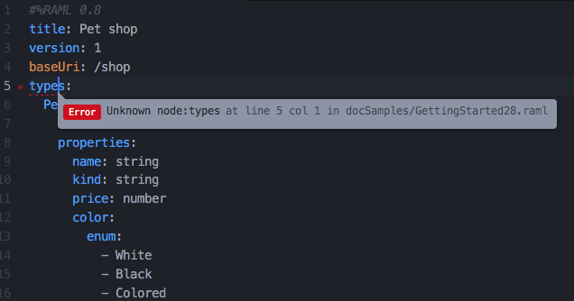

- Getting Started
- Code Completion
- General API Workbench Functionality
- Navigation
- Outline and Details
- Validation
- Wizards
Validation
Validation of RAML code is performed automatically on each code modification. User does not need to invoke it manually.
The results of validation are displayed in two places:
- The line of the code containing a error is underscored with red, the left ruler displays a red dot.
- The pop-up in the bottom of the editor displays all the errors located in the current file, or in the elements in other files, current files has references to.
Clicking on the line underscored with red displays a pop-up with the error description.
Clicking on the error item in the bottom reveals the error line in the editor.

Structural Validation

This validation checks the structure of the document.
Following conditions are checked:
- There must be no YAML nodes which can not be mapped to the nodes of RAML model (except of allow any regions).
- Required properties of every node in RAML model must be provided with values.
- Nodes with dublicating key and kind must not exist on the same root.
- Each include must be resolved to a file which exists on abstract file system.
- Each type discriminator must be resolved.
References Validation

This type of validations checks nodes that should contain references and tries to find out the element, the reference points to. If the referenced element is not found, the error is reported.
Reference validation of the following kinds of element is supported:
- User-defined types
- Schemas
- Resource types
- Traits
- Resource type/ Trait Parameters
- Security schemas
Traits & Resource Type Parameters Validation

This type of validation checks that the elements referencing resource types or traits do provide required parameter values, and do not provide any unknown parameters.
Schema Validation

This type of validation checks that schemas have correct syntax.
Example Validation

This type of validation checks that example conforms to its type or schema.
RAML version and fragments

The header comment in the RAML file provides validation engine with information of which RAML version to validate against.
#%RAML 1.0
It may also declare a root node being different from the API default, in such a case validation accepts such a node children to be located at the top level.